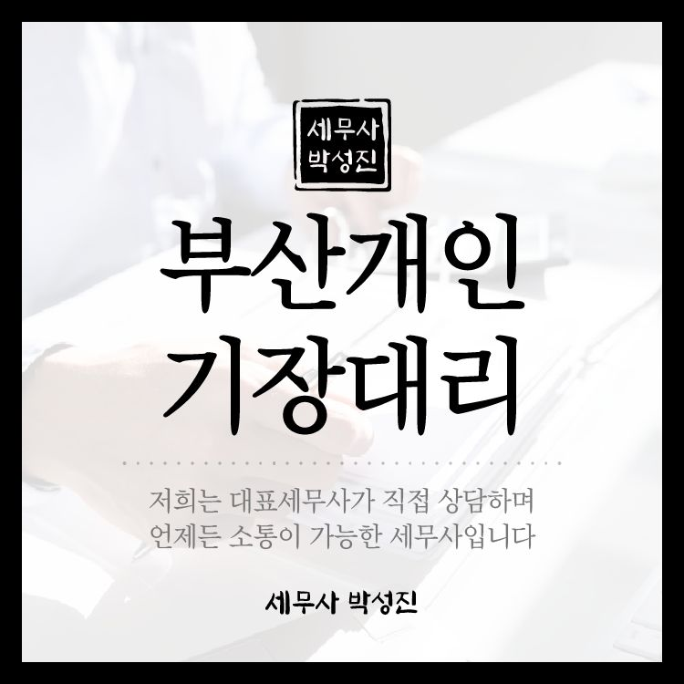
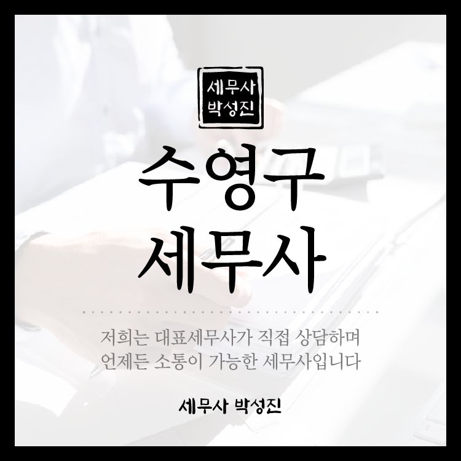
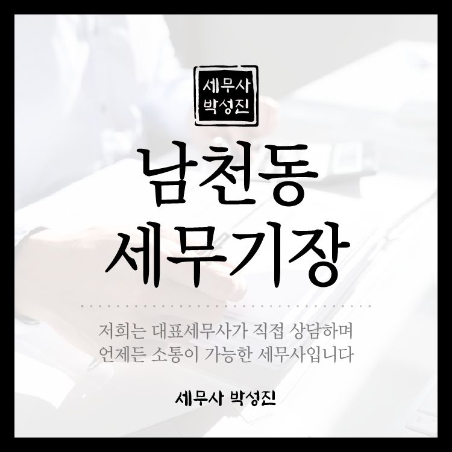
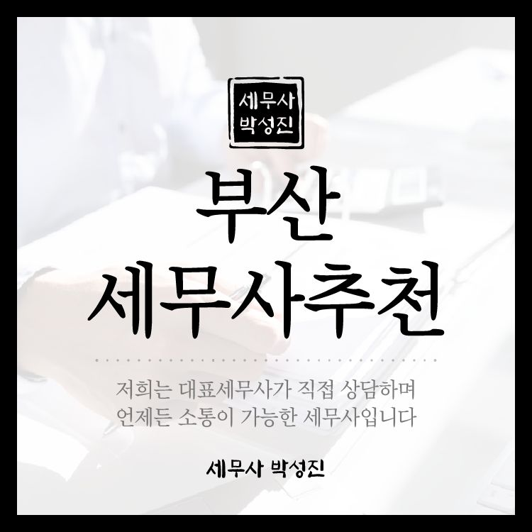
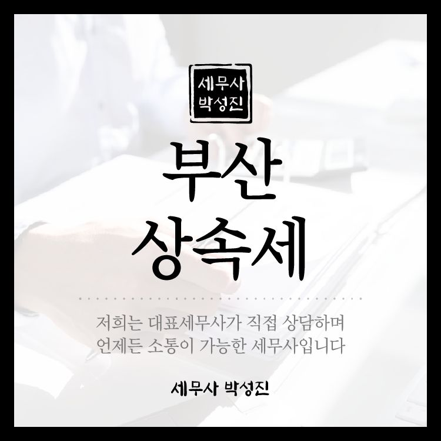

어려운 세금 이야기를 쉽게 풀어 드립니다


부산 개인기장대리 해야하는 이유 안녕하세요. 박성진 세무사입니다. 저희 부산 개인기장대리 사무소에서는 기장대행부터 세무와 관련된 도움을 드리고 있습니다. 처음 기장을 맡기려고 하실 때 어떤 곳을 선택해야…
수영구 세무사 경리대행 아웃소싱 어떤 점이 좋을까 안녕하세요. 박성진세무사입니다. 초기 사업을 시작하시다가 어느 정도 사업 규모가 확장되면 추가 직원을 고용하게 됩니다. 특히 재무나 경리부서 같은 경우 전문 분야로 구분이… 부산 학원 세무사 절세하는 유리한 방법은 안녕하세요. 박성진세무사입니다. 우리나라의 교육열은 식지 않고 여전히 뜨겁습니다. 학원 개업에 관심을 갖는 분들도 계속해서 늘어나고 있는데요. 많은 분들이 학원을 개업하지… 부산 수영구 세무사 세무조사 대상이 되었다면 안녕하세요. 세무조사 대행 도와드리는 부산 수영구 세무사 박성진 세무사입니다. 풍부한 세무조사 대응 경험을 바탕으로 여러 분의 소중한 재산을 지켜드릴 수 있도록 하겠습니다…
남천동 세무기장 절세를 위한다면 사업을 운영하고 있다면 세금 신고는 뗄래야 뗄 수 없는 필수적인 부분이라고 할 수 있습니다. 세무사에게 맡겨야 할 지 혹은 비용을 절감하기 위해 직접 처리를 해야할 지에…
부산세무사추천 달라지는 2025년 상속세 증여세 대비 안녕하세요. 박성진세무사입니다. 오늘은 다가오는 2025년 개정되는 상속세와 증여세 개정안에 대해 안내해드리고 세금부담을 줄이기 위해 부산세무사추천 어떤 절세 전략을 세워…
부산상속세 신고해야할지 고민된다면 안녕하세요, 박성진 세무사입니다. 오늘은 상속세에 관련된 이야기를 하고자 합니다. 상속받은 재산의 규모가 크지 않거나 혹은 상속받지 않은 재산이 없더라도 상속세를 신고 해… 부산세무회계 세금을 줄이는 팁 박성진세무사 안녕하세요. 박성진 세무사입니다. 사업을 운영하신다면 기장은 필수라고 할 수 있습니다. 기장은 사업을 하는동안 들어오고 나간 돈 등을 기록하는 장부라고 할 수 있는데요.… 대연동세무사 개인사업자 폐업신고 절차와 세금 신고까지 안녕하세요. 박성진세무사입니다. 오늘은 개인사업자의 폐업신고 절차와 부가세 신고에 대해 알려드리겠습니다. 폐업을 예정하고 있는 사업자 분들이면 내용 참고하여서 폐업신고를…첫 번째 글을 준비하고 있습니다. 곧 찾아뵙겠습니다.
이 글은 일반적인 안내입니다. 개별 사안은 상황에 따라 결론이 달라질 수 있으니 상담을 통해 확인해 주세요.